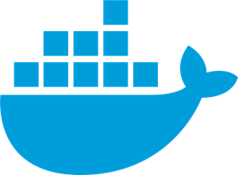

ncbu
Description:
ncbu - or NextCloud Back-Up - is a docker container image created to simplify and automate perodic physical snapshots of a self-hosted nextcloud service. The snapshots serve as a backup of the nextcloud volume and also (if applicable) the nextcloud database volume.
The intention is to run this image as a container alongside the nextcloud app and database containers. Management of the "live" nextcloud/database volumes can therefore be left to docker. When the ncbu back-up script is initialised, it first locks the nextcloud instance (i.e. puts nextcloud into maintenance mode) before syncing the volumes to a user-defined location. Once complete, the script unlocks nextcloud so that normal usage can resume.
By locking nextcloud first, ncbu ensures that the backup is effectively a "snapshot" of the nextcloud and database volumes.
Why?:
I discovered docker on my journey to rid myself of cloud-based services not within my control. A docker implementation of nextcloud is great for robustness and portability. It also facillitated simple back-ups by binding the data volumes to a user-accessible directory. Initially I set up an rsync cronjob to automate my backups and this was fine, but I saw potential benefits in containerising the backup service. Mostly, I wanted to have a go at learning docker and creating my own container image.
Now my backup automation is implmented simultaneously alongside the nextcloud and database containers thanks to docker-compose and a single *.yml file. Refer to my clews.pro project for more information of my self-hosting implementation.
What:
Once it is spun up, provided the correct environment variables and volumes are defined, the ncbu will run an initialisation script (ncbu_init.sh) to do some basic error-checking, then it will simply kick off cron in the foreground. There is a single cron job set (at a user-defined time, midnight every dy by default) which will execute the backup script.
The backup script (ncbu.sh) will first put the nextcloud instance into maintenance mode, effectively "freezing" the nextcloud data files and database. Rsync is then used to copy all of the files from the nextcloud and database volumes to a backup directory. Once complete, maintenance mode is disabled.
A third script within the container (ncbu_restore.sh) is used to restore nextcloud and database containers from a stored backup. The restore script can only be run manually by the user. It will similarly put nextcloud into maintenance mode and then sync all the nextcloud and database files in the reverse direction before exiting maintenance mode. The restore script will also initialise a scan of the data files and update the database accordingly - this helps if the user is "restoring" to a new host.
How:
The following commands may be useful, but much more detail can be found at the gitlab or dockerhub repositories.
Create the container:
Build from source:
$ git clone git@gitlab.com:clewsy/ncbu
$ cd ncbu
$ docker build -t ncbu/ncbu .
Pull from dockerhub:
$ docker pull clewsy/ncbu
Run the container:
Run using the docker run command:
$ docker run -ti \
-h ncbu \
-e NEXTCLOUD_CONTAINER=nextcloud-app \
-e NEXTCLOUD_DATABASE_CONTAINER=nextcloud-db \
-e NEXTCLOUD_BACKUP_CRON="0 0 * * *" \
-v /etc/localtime:/etc/localtime:ro \
-v /var/run/docker.sock:/var/run/docker.sock:ro \
-v nextcloud-app:/mnt/nextcloud-app \
-v nextcloud-db:/mnt/nextcloud-db \
-v ./nextcloud-bu:/backup \
clewsy/ncbu
Alternatively, it can be run using docker-compose. Here is an example docker-compose.yml file.
Initiate a manual backup:
$ docker exec ncbu ncbu.sh
Initiate restoration from a backup:
$ docker exec ncbu ncbu_restore.sh